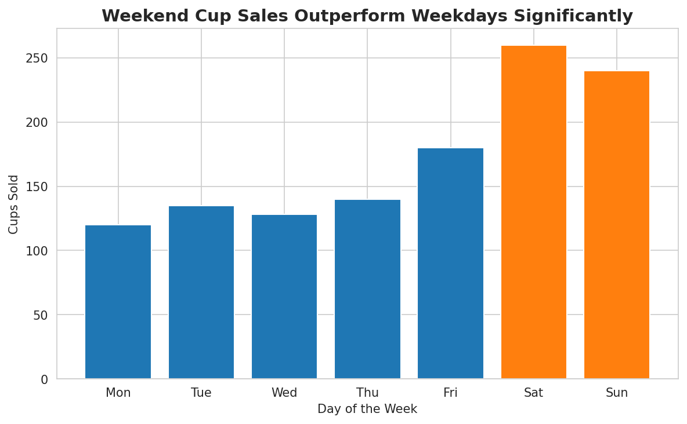

Coffee shop: which days are busiest?
Chart: Bar chart, highlighted
A small shop wants to schedule staff. Comparing categories calls for a bar chart, and two orange bars make the peak days impossible to miss.
Saturday and Sunday sell up to twice as much as weekdays, so add staff on weekends.